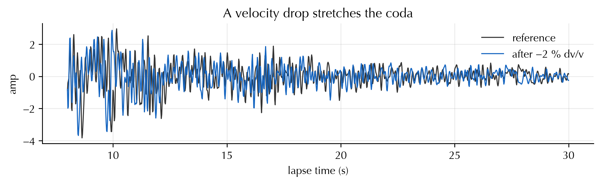
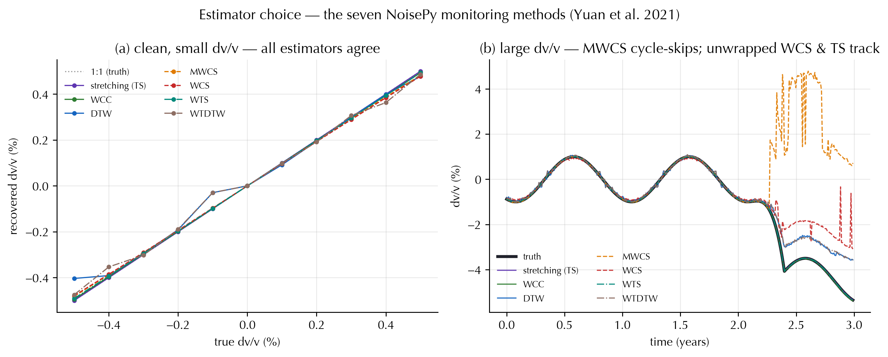
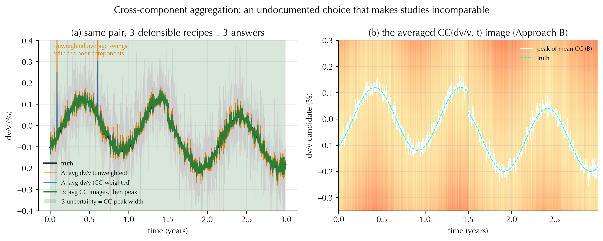
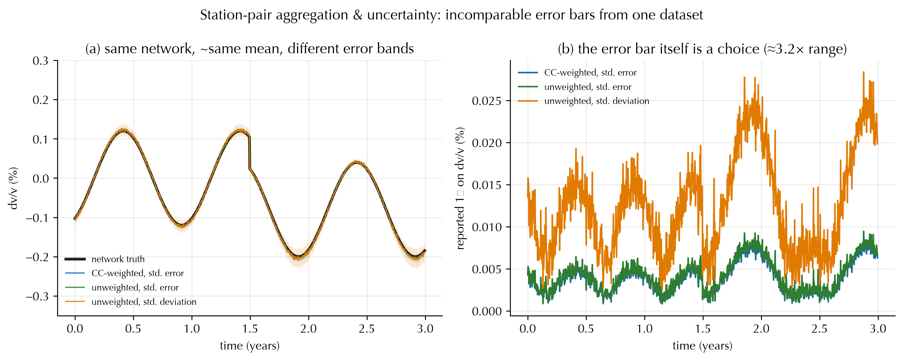
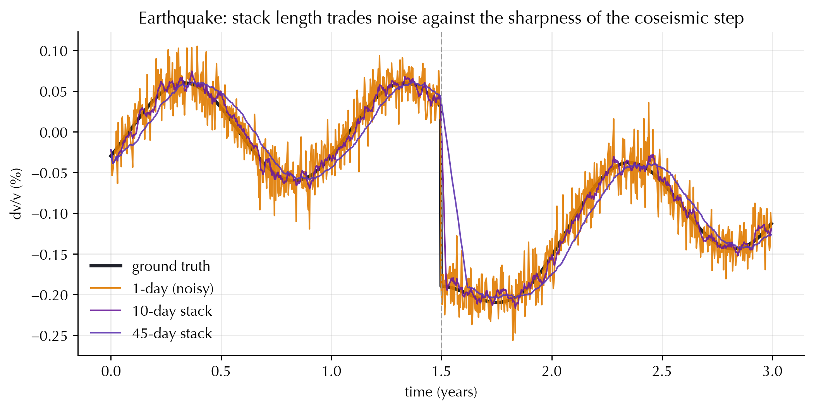
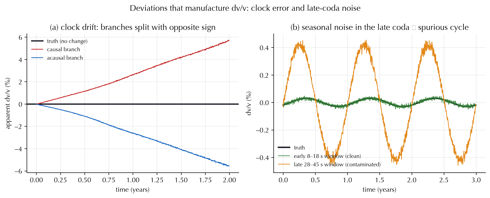
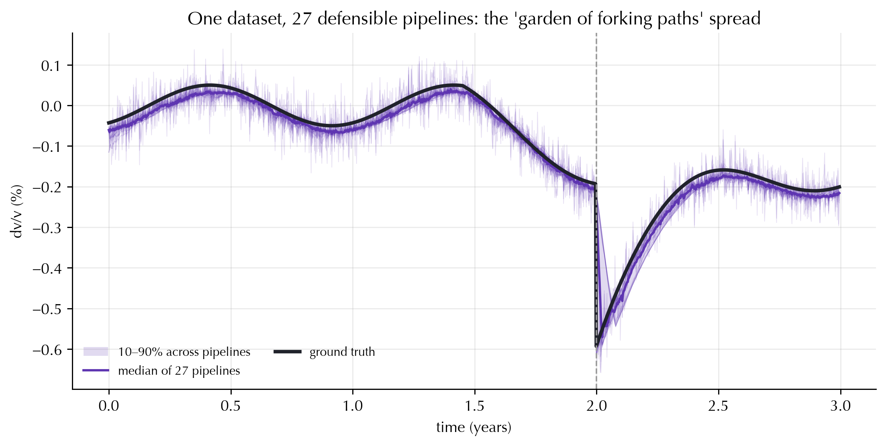

The experiment We synthesize a reference coda cross-correlation function (CCF), repeat it over three years while imposing a known ground-truth \(\delta v/v(t)\), and add measurement noise. Then we measure \(\delta v/v\) back under different processing choices — and, deliberately, some deviations from best practice: the wrong estimator for the signal size, a different way to aggregate a pair’s cross-components, a coda window reused across frequency bands, a moving reference, a station clock error, seasonal noise in the late coda. Because the truth is known, every gap is an artefact of a choice, not of nature. The worry is reproducibility: these choices are usually ad-hoc and undocumented, yet they move the answer — so two groups analysing the same data can disagree for no physical reason. This is the waveform-level companion to the best-practice survey and its references.
The machinery lives in codameter.synthetic_demo: a band-limited, multiply-scattered coda (make_coda, and a frequency-dependent-decay variant make_freqdep_coda), a homogeneous velocity change applied by stretching the coda (impose_dvv), daily noisy CCFs (daily_ccfs), artefact injectors (add_clock_drift, add_seasonal_late_noise), and the estimators below. A noiseless self-check confirms recovery to \(\sim\!10^{-6}\).
Set up — imports, style, self-check, and the coda waveform
import numpy as npimport matplotlib.pyplot as pltfrom codameter import synthetic_demo as sdsd.apply_style()s = sd.Synth()truth = np.array([-0.003, 0.0, 0.004])cur = np.stack([sd.impose_dvv(s.ref, s.t, x) for x in truth])rec, cc = sd.measure_stretching(cur, s.ref, s.t, band=(0.3, 2.0), fs=s.fs, window=(8, 35))print("noiseless recovery error:", float(np.max(np.abs(rec - truth))))cur2 = sd.impose_dvv(s.ref, s.t, -0.02) # exaggerated −2 % for visibilityfig, ax = plt.subplots(figsize=(8.2, 2.6))m = (s.t >=8) & (s.t <=30)ax.plot(s.t[m], s.ref[m], color="0.2", lw=1.0, label="reference")ax.plot(s.t[m], cur2[m], color=sd.C["landslide"], lw=1.0, label="after −2 % dv/v")ax.set(xlabel="lapse time (s)", ylabel="amp", title="A velocity drop stretches the coda")ax.legend(loc="upper right"); fig.tight_layout()
noiseless recovery error: 4.121431046038432e-06

1. The full NoisePy / Yuan et al. (2021) estimator suite
NoisePy’s monitoring_methods ships seven dv/v estimators, and we reproduce all seven live here: stretching (TS), wcc_dvv (windowed cross-correlation), dtw_dvv (dynamic time warping), mwcs_dvv (moving-window cross-spectrum), and the wavelet-domain wxs_dvv (WCS, the popular wavelet cross-spectrum), wts_dvv (wavelet stretching), and wtdtw_dvv (wavelet DTW). Yuan et al. (2021) benchmark the suite numerically.
On small, clean\(\delta v/v\) they all sit on the 1:1 line (panel a) — so the choice does not matter and the result is reproducible. The choice bites at large\(\delta v/v\) (panel b), where the methods split by family:
Stretching family (TS, WTS) — and WCC — match the whole dilated coda and stay accurate;
Phase methods read delays from a wrapped phase. MWCS wraps at half a period and cycle-skips; WCSwould too, but here it unwraps the phase in 2-D (Mao et al. 2020) — so the very same family succeeds or fails purely on the unwrapping choice;
Warping methods (DTW, WTDTW) track but under-shoot the largest strains (a discretized-warp bias).
No method is simply “right”; the point is that an ad-hoc estimator choice — or even a sub-choice like whether to unwrap — silently changes the answer once the signal leaves the small-amplitude regime.
Code
sd.fig_methods();

2. Aggregating cross-components
A single station pair carries several cross-component CCFs (ZZ, ZN, …), each a noisy view of the same\(\delta v/v\). How you combine them is a workflow choice that is almost never reported, yet it changes both the value and the uncertainty:
A — average the dv/v. Peak-pick each component’s stretching curve \(\mathrm{CC}(\varepsilon, t)\), then average the per-component dv/v. Its uncertainty is the ensemble spread of the picks. Unweighted, a few poor components drag the mean around; CC-weighted, they are suppressed.
B — average the images. Stack the \(\mathrm{CC}(\varepsilon, t)\) images across components first, then peak-pick once. Its uncertainty is the width of the averaged CC peak — a different statistical object entirely.
All three are reasonable and appear in the literature (including NoisePy). On the same station pair they give visibly different time series — A-unweighted swings with the poor components while CC-weighted-A and image-stack-B track — and they propagate uncertainty along incompatible pathways, so two studies using different recipes are simply not comparable.
Code
sd.fig_aggregation();

3. Station-pair aggregation and the error bar you report
Add the next layer up — many station pairs, each already a coherence-weighted average over its cross-components, combined into a network\(\delta v/v(t)\). Now the choice is how to summarize the uncertainty, and three conventions all appear in the literature:
CC-weighted standard error — weight pairs by coherence, \(\sigma =
\sigma_w/\sqrt{N_\mathrm{eff}}\);
unweighted standard error — \(\sigma = \mathrm{std}/\sqrt{N}\);
standard deviation — report the between-pair scatter, not divided by \(\sqrt{N}\).
On the same network the means nearly coincide, but the reported \(1\sigma\) spans a factor of \(\sim\!\sqrt{N}\) (panel b). A velocity change that is “\(3\sigma\) significant” under the tight convention is “\(1\sigma\), not significant” under the conservative one — from the same data. Error bars are not comparable across studies unless the aggregation and the SE-vs-SD convention are both stated.
Code
sd.fig_uncertainty();

4. Frequency band selects the depth and the signal
Give the medium two layers: a shallow one with a strong seasonal cycle and a deep one with a multi-year drought trend, each living in a different part of the coda spectrum. Band high → you recover the shallow seasonal signal; band low → the deep trend. The band is not a free knob — it chooses what you measure (survey rule 6).
Code
sd.fig_frequency_depth();
5. The coda window does not transfer across bands
A common deviation: pick one lapse window (say 20–40 s) and reuse it at every frequency. But the coda decays faster at high frequency (\(A(t)\propto
e^{-\pi f t/Q_c}\)), so a window that is full of signal at low frequency is pure noise at high frequency (panel a). Measuring the high band in that fixed late window returns garbage; an earlier, SNR-matched window recovers the truth (panel b). The window must scale with the band — ideally set from the coda envelope / a fixed number of mean-free-times, not copied across bands.
Code
sd.fig_window_band();
6. Stacking length trades resolution against noise
A coseismic step under a seasonal cycle. A 1-day CCF is noisy but captures the step’s timing; a long trailing stack suppresses noise but rounds off and delays the step — the resolution/precision trade-off behind stacking choices (survey rule 7).
Code
sd.fig_stacking();

7. Reference strategy
How you define the reference sets what survives. A total-stack reference is unbiased but noisy; a moving reference re-baselines continuously and so erases slow trends (the pre-eruptive decline vanishes); the Brenguier et al. (2014) joint inversion measures relative \(\delta v/v\) between many short stacks and inverts x_i − x_j = m_{ij} with a smoothness penalty — robust to any single reference and trend-preserving.
Code
sd.fig_reference();
8. Deviations that manufacture dv/v
Not every wiggle is a velocity change. Two classic instrument/environment artefacts inject spurious\(\delta v/v\):
Station clock error (panel a). A timing drift delays the whole CCF — a constant lag, independent of lapse — so it appears with opposite sign on the causal and acausal branches. A real velocity change moves both the same way, so measuring the two branches separately is the diagnostic.
Seasonal noise in the late coda (panel b). A seasonally changing noise-source distribution warps the low-SNR late coda, so a late window reports a coherent spurious seasonal\(\delta v/v\) many times the real signal, while an early, higher-SNR window stays clean (the Zhan 2013 / Daskalakis 2016 warning).
Code
sd.fig_artifacts();

9. The garden of forking paths
Finally, take one volcano dataset and run 27 individually reasonable pipelines (3 bands × 3 windows × 3 stack lengths) with a common pre-eruption reference. The median tracks the truth, but the 10–90 % spread across pipelines fans out most where it matters — at the sharp co-eruptive drop. The honest object is a distribution of \(\delta v/v\) over processing choices, which is exactly what codameter.uq_processing samples and marginalizes.
Code
sd.fig_multiverse();

Takeaways
Choice / deviation
Shown with
Consequence of deviating
Estimator — all 7 NoisePy methods
Yuan 2021 suite
At large dv/v: MWCS cycle-skips, 2-D-unwrapped WCS recovers, warps (DTW, WTDTW) under-shoot
Cross-component aggregation
Station pair, 6 components
Avg-dv/v vs avg-CC-images, weighted vs not → different value and uncertainty
Station-pair aggregation & σ
9-pair network
Same mean, but reported 1σ differs ~√N (SE vs SD, weighted vs not)
Frequency band
Groundwater 2-layer
Band selects depth → a different signal
Coda window vs band
Frequency-dependent coda
A fixed late window is pure noise at high frequency
Stack length
Earthquake step
Long stack smears and delays the step
Reference scheme
Volcano
Moving reference erases the trend; joint inversion is robust
Clock error
Stable medium
Spurious dv/v, opposite-sign on causal vs acausal branches
Seasonal late-coda noise
Stable medium
Spurious seasonal dv/v from a late window
All of the above
Multiverse
Spread across pipelines ≈ size of the signal
The constructive response is the survey’s cross-cutting rules: quantify the within-choice error, scale the band/window to the target depth, fix the reference deliberately, check the causal/acausal branches for timing errors, weight by SNR, and — when in doubt — sample the choices and report the marginal.
Reproduce locally:pixi run python literature/synthetic_dvv_demo.py.
---title: "How processing choices move dv/v"subtitle: "Known truth in, choices applied, artefacts out"jupyter: codameter-pixiexecute: warning: false echo: truetoc: truetoc-depth: 2---::: {.keyidea}[The experiment]{.k-title}We synthesize a **reference coda** cross-correlation function (CCF), repeat itover three years while imposing a **known** ground-truth $\delta v/v(t)$, and addmeasurement noise. Then we *measure $\delta v/v$ back* under different processingchoices — and, deliberately, some **deviations from best practice**: the wrongestimator for the signal size, a different way to aggregate a pair'scross-components, a coda window reused across frequency bands, a movingreference, a station clock error, seasonal noise in the late coda. Becausethe truth is known, **every gap is an artefact of a choice**, not of nature. Theworry is reproducibility: these choices are usually **ad-hoc and undocumented**,yet they move the answer — so two groups analysing the same data can disagree forno physical reason. This is the waveform-level companion to the[best-practice survey](survey-best-practices.qmd) and its[references](survey-references.qmd).:::The machinery lives in[`codameter.synthetic_demo`](https://github.com/Denolle-Lab/codameter/blob/master/src/codameter/synthetic_demo.py):a band-limited, multiply-scattered coda (`make_coda`, and afrequency-dependent-decay variant `make_freqdep_coda`), a homogeneous velocitychange applied by stretching the coda (`impose_dvv`), daily noisy CCFs(`daily_ccfs`), artefact injectors (`add_clock_drift`,`add_seasonal_late_noise`), and the estimators below. A noiseless self-checkconfirms recovery to $\sim\!10^{-6}$.```{python}#| code-fold: true#| code-summary: "Set up — imports, style, self-check, and the coda waveform"import numpy as npimport matplotlib.pyplot as pltfrom codameter import synthetic_demo as sdsd.apply_style()s = sd.Synth()truth = np.array([-0.003, 0.0, 0.004])cur = np.stack([sd.impose_dvv(s.ref, s.t, x) for x in truth])rec, cc = sd.measure_stretching(cur, s.ref, s.t, band=(0.3, 2.0), fs=s.fs, window=(8, 35))print("noiseless recovery error:", float(np.max(np.abs(rec - truth))))cur2 = sd.impose_dvv(s.ref, s.t, -0.02) # exaggerated −2 % for visibilityfig, ax = plt.subplots(figsize=(8.2, 2.6))m = (s.t >=8) & (s.t <=30)ax.plot(s.t[m], s.ref[m], color="0.2", lw=1.0, label="reference")ax.plot(s.t[m], cur2[m], color=sd.C["landslide"], lw=1.0, label="after −2 % dv/v")ax.set(xlabel="lapse time (s)", ylabel="amp", title="A velocity drop stretches the coda")ax.legend(loc="upper right"); fig.tight_layout()```---## 1. The full NoisePy / Yuan et al. (2021) estimator suiteNoisePy's `monitoring_methods` ships **seven** dv/v estimators, and we reproduce**all seven live** here: `stretching` (TS), `wcc_dvv` (windowedcross-correlation), `dtw_dvv` (dynamic time warping), `mwcs_dvv` (moving-windowcross-spectrum), and the wavelet-domain `wxs_dvv` (**WCS**, the popular waveletcross-spectrum), `wts_dvv` (wavelet stretching), and `wtdtw_dvv` (wavelet DTW).**Yuan et al. (2021)** benchmark the suite numerically.On **small, clean** $\delta v/v$ they all sit on the 1:1 line (panel a) — so the*choice does not matter and the result is reproducible*. The choice bites at**large** $\delta v/v$ (panel b), where the methods split by **family**:- **Stretching family** (TS, WTS) — and WCC — match the whole dilated coda and stay accurate;- **Phase methods** read delays from a wrapped phase. **MWCS** wraps at half a period and **cycle-skips**; **WCS** *would* too, but here it **unwraps the phase in 2-D** (Mao et al. 2020) — so the very same family succeeds or fails purely on the **unwrapping choice**;- **Warping methods** (DTW, WTDTW) track but **under-shoot** the largest strains (a discretized-warp bias).No method is simply "right"; the point is that an **ad-hoc estimator choice** —or even a sub-choice like whether to unwrap — silently changes the answer oncethe signal leaves the small-amplitude regime.```{python}#| code-fold: truesd.fig_methods();```---## 2. Aggregating cross-componentsA single station pair carries several cross-component CCFs (ZZ, ZN, …), each anoisy view of the *same* $\delta v/v$. How you combine them is a workflow choicethat is almost never reported, yet it changes both the value **and theuncertainty**:- **A — average the dv/v.** Peak-pick each component's stretching curve $\mathrm{CC}(\varepsilon, t)$, then **average the per-component dv/v**. Its uncertainty is the *ensemble spread* of the picks. *Unweighted*, a few poor components drag the mean around; **CC-weighted**, they are suppressed.- **B — average the images.** Stack the $\mathrm{CC}(\varepsilon, t)$ images across components **first**, then peak-pick once. Its uncertainty is the *width of the averaged CC peak* — a different statistical object entirely.All three are reasonable and appear in the literature (including NoisePy). On thesame station pair they give visibly different time series — A-unweighted swingswith the poor components while CC-weighted-A and image-stack-B track — and theypropagate uncertainty along **incompatible pathways**, so two studies usingdifferent recipes are simply not comparable.```{python}#| code-fold: truesd.fig_aggregation();```---## 3. Station-pair aggregation and the error bar you reportAdd the next layer up — many station pairs, each already a coherence-weightedaverage over its cross-components, combined into a **network** $\delta v/v(t)$.Now the choice is how to summarize the *uncertainty*, and three conventions allappear in the literature:- **CC-weighted standard error** — weight pairs by coherence, $\sigma = \sigma_w/\sqrt{N_\mathrm{eff}}$;- **unweighted standard error** — $\sigma = \mathrm{std}/\sqrt{N}$;- **standard deviation** — report the between-pair *scatter*, not divided by $\sqrt{N}$.On the same network the **means nearly coincide**, but the reported $1\sigma$spans a factor of $\sim\!\sqrt{N}$ (panel b). A velocity change that is "$3\sigma$significant" under the tight convention is "$1\sigma$, not significant" under theconservative one — from the *same data*. Error bars are not comparable acrossstudies unless the aggregation and the SE-vs-SD convention are both stated.```{python}#| code-fold: truesd.fig_uncertainty();```---## 4. Frequency band selects the depth and the signalGive the medium **two layers**: a shallow one with a strong seasonal cycle and adeep one with a multi-year drought trend, each living in a different part of thecoda spectrum. Band high → you recover the shallow seasonal signal; band low →the deep trend. **The band is not a free knob — it chooses what you measure**(survey rule 6).```{python}#| code-fold: truesd.fig_frequency_depth();```---## 5. The coda window does not transfer across bandsA common deviation: pick one lapse window (say 20–40 s) and reuse it at everyfrequency. But the coda **decays faster at high frequency** ($A(t)\proptoe^{-\pi f t/Q_c}$), so a window that is full of signal at low frequency is **purenoise** at high frequency (panel a). Measuring the high band in that fixed latewindow returns garbage; an earlier, SNR-matched window recovers the truth (panelb). The window must scale with the band — ideally set from the coda envelope / afixed number of mean-free-times, not copied across bands.```{python}#| code-fold: truesd.fig_window_band();```---## 6. Stacking length trades resolution against noiseA coseismic **step** under a seasonal cycle. A 1-day CCF is noisy but capturesthe step's timing; a long trailing stack suppresses noise but **rounds off anddelays the step** — the resolution/precision trade-off behind stacking choices(survey rule 7).```{python}#| code-fold: truesd.fig_stacking();```---## 7. Reference strategyHow you define the reference sets what survives. A **total-stack** reference isunbiased but noisy; a **moving** reference re-baselines continuously and so**erases slow trends** (the pre-eruptive decline vanishes); the **Brenguier etal. (2014) joint inversion** measures relative $\delta v/v$ between many shortstacks and inverts ``x_i − x_j = m_{ij}`` with a smoothness penalty — robust toany single reference *and* trend-preserving.```{python}#| code-fold: truesd.fig_reference();```---## 8. Deviations that *manufacture* dv/vNot every wiggle is a velocity change. Two classic instrument/environmentartefacts inject **spurious** $\delta v/v$:- **Station clock error** (panel a). A timing drift delays the whole CCF — a *constant* lag, independent of lapse — so it appears with **opposite sign on the causal and acausal branches**. A real velocity change moves both the same way, so measuring the two branches separately is the diagnostic.- **Seasonal noise in the late coda** (panel b). A seasonally changing noise-source distribution warps the low-SNR late coda, so a **late** window reports a coherent spurious *seasonal* $\delta v/v$ many times the real signal, while an **early**, higher-SNR window stays clean (the Zhan 2013 / Daskalakis 2016 warning).```{python}#| code-fold: truesd.fig_artifacts();```---## 9. The garden of forking pathsFinally, take one volcano dataset and run **27 individually reasonable pipelines**(3 bands × 3 windows × 3 stack lengths) with a common pre-eruption reference. Themedian tracks the truth, but the 10–90 % spread across pipelines fans out **mostwhere it matters** — at the sharp co-eruptive drop. The honest object is a*distribution* of $\delta v/v$ over processing choices, which is exactly what[`codameter.uq_processing`](https://github.com/Denolle-Lab/codameter/blob/master/src/codameter/uq_processing.py)samples and marginalizes.```{python}#| code-fold: truesd.fig_multiverse();```---## Takeaways| Choice / deviation | Shown with | Consequence of deviating || ---| ---| ---|| Estimator — all 7 NoisePy methods | Yuan 2021 suite | At large dv/v: MWCS cycle-skips, 2-D-unwrapped WCS recovers, warps (DTW, WTDTW) under-shoot || Cross-component aggregation | Station pair, 6 components | Avg-dv/v vs avg-CC-images, weighted vs not → different value *and* uncertainty || Station-pair aggregation & σ | 9-pair network | Same mean, but reported 1σ differs ~√N (SE vs SD, weighted vs not) || Frequency band | Groundwater 2-layer | Band selects depth → a *different* signal || Coda window vs band | Frequency-dependent coda | A fixed late window is pure noise at high frequency || Stack length | Earthquake step | Long stack smears and delays the step || Reference scheme | Volcano | Moving reference erases the trend; joint inversion is robust || Clock error | Stable medium | Spurious dv/v, opposite-sign on causal vs acausal branches || Seasonal late-coda noise | Stable medium | Spurious *seasonal* dv/v from a late window || All of the above | Multiverse | Spread across pipelines ≈ size of the signal |The constructive response is the survey's[cross-cutting rules](survey-best-practices.qmd#cross-cutting-methodology-rules):quantify the within-choice error, scale the band/window to the target depth, fixthe reference deliberately, check the causal/acausal branches for timing errors,weight by SNR, and — when in doubt — **sample the choices and report themarginal**.*Reproduce locally:* `pixi run python literature/synthetic_dvv_demo.py`.